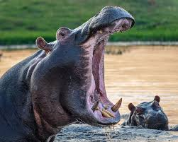
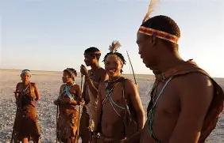
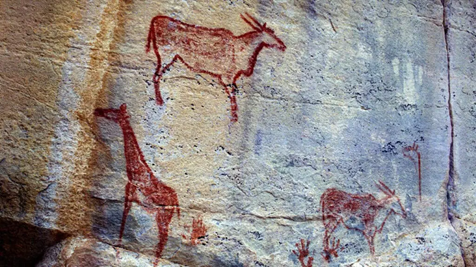

Botswana has different cultures made up in different ethnic groups such as the Bakwena, Bangwato, and Bakgatla. Every group has traditions, culture and totems they follow and believe in. A totem symbolises an animals, However the Bakwena are associated with the crocodile.
The people of Bakwena who are proud and have stick firm to their traditions, culture and have carried their rich history for many years.
Learn More

